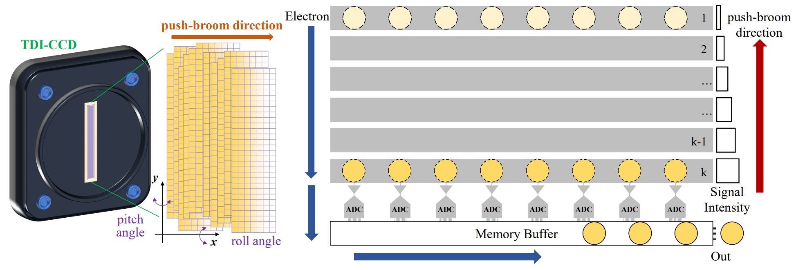
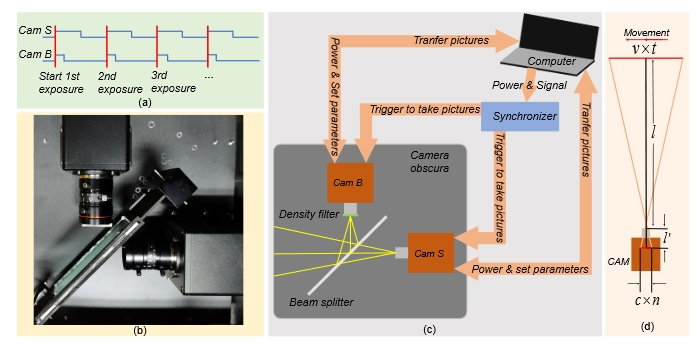

About Me
I am a Researcher at the Shanghai Scientific Intelligence Research Institute (SAIS), under the supervision of Prof. Siyu Zhu. My research centers on generative AI — including diffusion models, flow matching, and transformer-based architectures — and AI for science, with applications in computational imaging, physics-informed modeling, and scientific discovery. I also work on efficient inference techniques (quantization, pruning, and distillation) to enable scalable deployment.
I earned my Ph.D. from Zhejiang University in June 2025. Prior to SAIS, I was a Senior Vision Algorithm Engineer at Honor, leading AI-native imaging pipelines. I was also a member of the Pujiang National Laboratory Joint Training Ph.D. Program, advised by Dr. Yueting Chen and Prof. Tianfan Xue.
I obtained my B.S. from Central South University, where I received the National Scholarship and was recognized as an Outstanding Graduate of Hunan Province. My Master's research at Zhejiang University was advised by Prof. Huajun Feng.
I have collaborated with Shi Guo, Zhihai Xu, Jinwei Gu, Yihao Liu, Xuelong Li, Qi Li, and Bin Zhao.
Research Interests
Recent Highlights
- 2025 Physics-guided jitter-aware restoration accepted to IEEE TGRS.
- 2024 Event-based low-light frame interpolation at SIGGRAPH Asia.
- 2024 Deep restoration for linear-array imaging at AAAI.
- 2023 ASF-Transformer for atmospheric turbulence in Optics Express.
- 2023 Real-world deep local motion deblurring at AAAI.
Technical Skills
Generative AI & Foundation Models
- Diffusion models, flow matching, transformer architectures.
- Physics-informed and data-driven generative modeling.
- Scientific applications: inverse problems, computational imaging.
Efficient Inference & Acceleration
- Model quantization, pruning, and knowledge distillation.
- Scalable deployment for real-time and edge applications.
- Algorithm–system co-design for performance.
Computational Imaging
- Low-light imaging, event-based vision, line-scan restoration.
- Interferometric and optical reconstruction.
- AI-native camera & ISP pipelines.
Selected Publications
Full list on Google Scholar.



Experience & Education
Professional
- 2026–Present — Researcher @ SAIS
- 2025–2026 — Senior Vision Algorithm Engineer @ Honor
- 2023–2025 — Trainee Researcher @ Shanghai AI Lab
- 2022 — Media Algorithm Intern @ Huawei 2012 Lab
Education
- Ph.D. Optical Engineering, Zhejiang University (2022–2025)
- M.S. Optical Engineering, Zhejiang University (2020–2022)
- B.S. Optoelectronic Engineering, Central South University (2016–2020)
Advisors & Collaborators
Advisors
- Prof. Siyu Zhu — Current Supervisor (SAIS)
- Yueting Chen — Ph.D. Advisor
- Tianfan Xue — Ph.D. Co-advisor
- Huajun Feng — M.S. Advisor
- Zhihai Xu — M.S. Co-advisor
- Qi Li — M.S. Co-advisor
Collaborators
Honors & Service
Honors
- Outstanding Graduate of Zhejiang University (2025)
- National Scholarship (Undergraduate, 2019)
- Outstanding Graduate of Hunan Province (2020)
Service
- PC Member — AAAI 2026
- Reviewer — IEEE TCI, TGRS, Optics Express, ACM MM, ECCV, ICCV
Contact
- Email: naturezhanghn@zju.edu.cn
- GitHub: github.com/naturezhanghn
- Google Scholar: Google Scholar